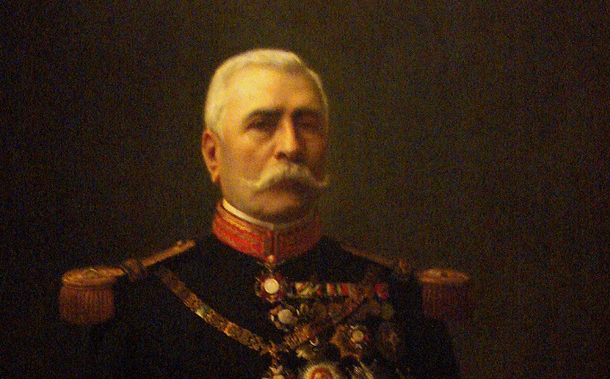
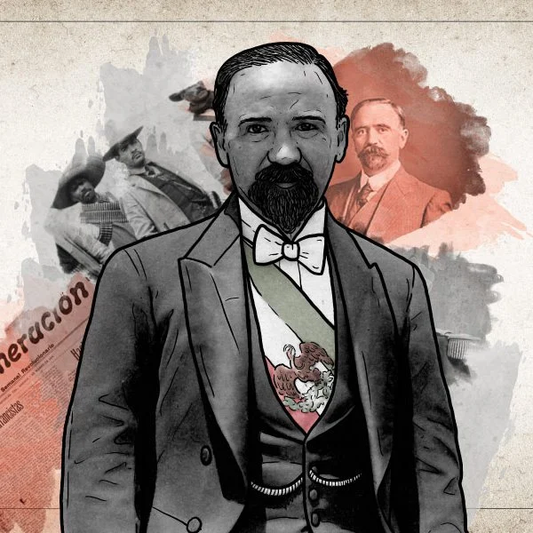
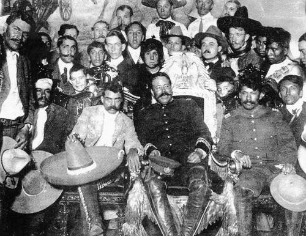
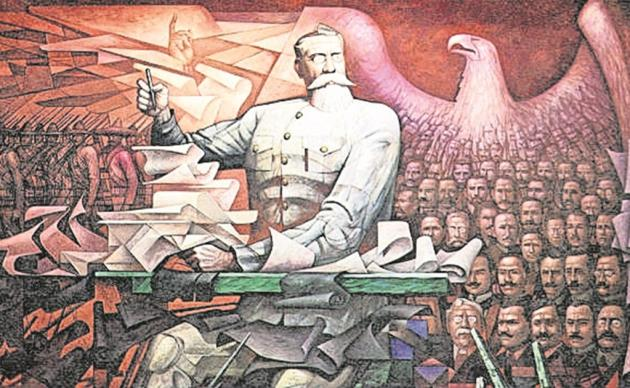

| *** El objetivo común: Porfirio Díaz *** |
| Luego de que el presidente Porfirio Díaz resultara electo para un nuevo período presidencial (1910-1914),
el excandidato y líder liberal Francisco I. Madero lanzó el Plan
de San Luis -fechado el 5 de octubre de 1910- para derrocarlo.
Su lema principal fue "Sufragio efectivo, no reelección",
y reivindicaba derechos laborales y la repartición de tierras que buscaban grupos sociales contrarios a Díaz,
según la "Cronología de la Revolución", del INEHRM.
En su plan de acción estaba una convocatoria a la lucha armada: "El 20 de noviembre,
desde las 6 de la tarde en adelante, todos los ciudadanos de la República tomarán las armas
para arrojar del poder a las autoridades que actualmente nos gobiernan".
Algunos grupos, como el de los hermanos Aquiles, Máximo y Carmen Serdán, al ser descubiertos en posesión de armas se alzaron
antes de la fecha pactada en Puebla. La muerte de los hermanos al enfrentarse con las fuerzas del gobierno los
llevó a ser considerados los primeros "mártires" del movimiento contra Díaz, además de que motivó a otros a la insurrección.
En los hechos no se dio un levantamiento coordinado el 20 de noviembre de 1910 a las 6 de la tarde para derrocar a Díaz,
pues para ese momento ya había "13 hechos de armas en diferentes estados", según el INEHRM.
Pero esa fecha ha sido considerada hasta hoy como el inicio de la Revolución Mexicana. |  |
| *** Francisco I. Madero, ascenso y caída *** |
| La lucha armada hizo surgir a otros líderes revolucionarios que acompañaron la causa de Francisco I. Madero,
entre otros Emiliano Zapata en el sur del país, así como Francisco "Pancho" Villa (su nombre real era Doroteo Arango),
Álvaro Obregón y Pascual Orozco en el norte. La presión revolucionaria tuvo éxito y Porfirio Díaz firmó su renuncia a la presidencia el 25 de mayo de 1911,
dando fin a 35 años de gobierno y abriendo paso a nuevas elecciones. Francisco I. Madero ganó la votación y asumió la presidencia de México el 6 de noviembre de 1911 en la que es considerada
"la primera elección democrática en 30 años", afirma el INEHRM.Aunque el movimiento logró la remoción de Díaz, el nuevo gobierno no dio pronta respuesta
a las demandas revolucionarias populares. México: Pancho Villa, de héroe a "un simple bandido" Pronto comenzaron las luchas entre los que fueran aliados al comienzo
del levantamiento armado, pues cada bando se asumía como auténtico defensor de los ideales revolucionarios. Zapata lanzó el Plan de Ayala bajo la bandera de la lucha agraria,
mientras que Orozco publicó el Plan de la Empacadora sobre demandas sociales. Ambos desconocieron la presidencia de Madero.El gobierno maderista logró defenderse durante
dos años frente a los insurgentes zapatistas, orozquistas, y otros grupos más pequeños, con apoyo de las tropas de Villa. Las mujeres, en todos los bandos,
tuvieron un papel de fuerza de apoyo a los revolucionarios e incluso tuvieron participación armada. Eran conocidas como "Las Adelitas". Las mujeres "de armas tomar" que olvidó la Revolución Mexicana
Pero en febrero de 1913 se da la "decena trágica": 10 días de enfrentamientos en un golpe militar que llevó a la renuncia de Madero el 19 de febrero y su asesinato tres días después.
Victoriano Huerta, conspirador del golpe con el grupo llamado "los contrarrevolucionarios", asumió la presidencia ese mismo día. El Pacto de la Embajada -conocido así porque se firmó en la sede
de Estados Unidos en México- tuvo éxito, aunque originalmente no tenía a Huerta como el elegido para la presidencia, según el INEHRM. |  |
| *** La lucha por el poder *** |
|  |
Para combatir a Huerta, llamado "el usurpador", una reorganización de fuerzas revolucionarias del norte llevó a la creación del Ejército Constitucionalista, al mando de Venustiano Carranza.
Con el Plan de Guadalupe, enfocó la lucha revolucionaria contra Huerta hasta lograr que el presidente golpista deje el poder en julio de 1914 y Carranza asuma el gobierno. La Convención de Aguascalientes
entre líderes revolucionarios llevó al desconocimiento de Carranza como presidente, por lo que nuevamente se abren dos grandes bandos: los convencionistas y los constitucionalistas.
Carranza, quien se hace llamar "líder máximo de la revolución", traslada su gobierno a Veracruz, mientras que los convencionistas nombran a Eulalio Gómez como presidente.
A partir de entonces vino una guerra de guerrillas. Las luchas armadas entre los bandos, en las que se da el grueso de las muertes -calculadas en más de un millón-,
se prologaron desde octubre de 1914 hasta noviembre de 1916. En ese mes, el gobierno y ejército de los convencionistas declaran su fin, aunque fuerzas zapatistas y villistas disminuidas siguieron sus luchas durante meses. |
| *** La Constitución de 1917 *** |
|  |
La balanza finalmente se inclina hacia las fuerzas de Carranza, quien desde septiembre de 1916 convocó un Congreso Constituyente para redactar una nueva Carta Magna del país.
Los constituyentes, electos por votación popular a finales de ese año, trabajaron en un plan de reunificación de las causas revolucionarias hasta comienzos de 1917.
Luego de ser votada el 31 de enero, la nueva Constitución es promulgada el 5 de febrero de 1917, marcando lo que se considera el fin de la Revolución Mexicana.
4 libros para entender México recomendados por sus periodistas (y otros sugeridos por los lectores de BBC Mundo)
Pero la lucha violenta por el poder no terminó ahí, pues las fricciones entre bandos desembocó en el asesinatode los líderes revolucionarios: Zapata (1919), Carranza (1920), Villa (1923) y Obregón (1928), entre otros.
Sin embargo, las bases del Estado moderno mexicano se establecen con la nueva Carta Magna. El documento consagra causas revolucionarias como el derecho agrario,
los derechos laborales, la educación y la salud garantizadas por el Estado, la libertad de prensa y los derechos políticos vigentes más de un siglo después.
|
| INICIO |
| INTRODUCCION | SIGUIENTE |